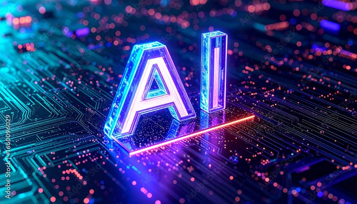

Trabajo de investigación sobre los efectos ambientales de la IA.

La IA es una disciplina o rama de la informática que se encarga de desarrollar sistemas capaces de realizar tareas que normalmente requieren de la inteligencia humana. Mediante la creación de algoritmos y modelos matemáticos, las máquinas procesan grandes volúmenes de datos, aprenden de ellos mejorando a medida que recopilan información y toman decisiones de forma autónoma. Son sistemas de software inteligentes capaces de realizar tareas o tomar decisiones.
Los impactos ambientales de la inteligencia artificial (IA) pueden variar significativamente. Muchos métodos de aprendizaje profundo tienen una importante huella de carbono y consumo de agua.
La IA tiene una importante huella de carbono debido al creciente consumo de energía, especialmente debido al entrenamiento y el uso. Los investigadores han argumentado que la huella de carbono de los modelos de IA durante el entrenamiento debe tenerse en cuenta al intentar comprender el impacto de la IA.
Los chips de IA (GPU) utilizan más energía y emiten más calor que los chips de CPU tradicionales. Los modelos de IA implementados de manera ineficiente pueden utilizar aún más energía.
El enfriamiento de los servidores de IA puede demandar grandes cantidades de agua dulce. Muchos centros de datos utilizan sistemas de reutilización para reducir el consumo. Se estima que una sesión promedio de ChatGPT puede utilizar hasta medio litro de agua fresca.
La producción de hardware para IA genera residuos electrónicos. El rápido crecimiento de esta tecnología puede acelerar la obsolescencia de dispositivos y aumentar los desechos electrónicos peligrosos.
Energías renovables
Algoritmos eficientes
Optimización de recursos
Reciclaje electrónico
IA responsable
Las instituciones educativas pueden desempeñar un papel fundamental en la reducción del impacto ambiental mediante el uso responsable de la tecnología y la promoción de prácticas sostenibles.
EJEMPLO: cada escuela debería implementar un plan de mantenimiento energético para monitorear todos los servicios e infraestructuras que requieren energía, facilitando la planificación de su uso más eficiente. Una estrategia eficaz consiste en crear una réplica digital del edificio escolar, que incluya todos los dispositivos y servicios, para optimizar la distribución del consumo de energía.
Los sistemas en la nube suelen estar gestionados por empresas capaces de diseñar sus servidores para minimizar el impacto ambiental, una tarea que a menudo resulta difícil de lograr para las instituciones escolares individuales.
Aunque la Inteligencia Artificial puede generar impactos ambientales significativos, también ofrece herramientas valiosas para enfrentar problemas ecológicos. El desafío consiste en desarrollar tecnologías más eficientes y sostenibles para maximizar sus beneficios y minimizar sus efectos negativos sobre el planeta.